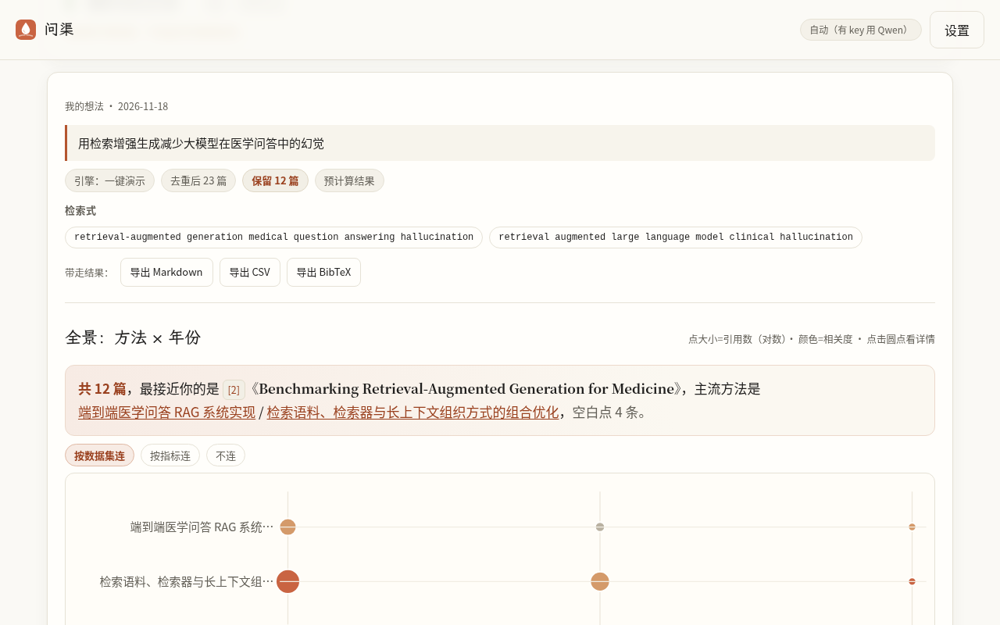

作品 · 论文检索
问渠
不求字字有答，但求一念豁达。——取意朱熹「问渠那得清如许，为有源头活水来」。

它解决什么问题
开始一个新课题时，最先要回答的往往是两个问题：这个方向前人做过什么？还有什么没人做？问渠把这件事压缩成一句话：输入一个研究想法或一个具体问题，它并行检索六大开放学术来源，合并去重后逐篇抽取关键字段，最后给出一张能直接看懂的「方法 × 年份」全景图、带「与你想法的关联」的论文卡片、单篇详情、研究空白点与对比表。
怎么工作
- 并行检索：OpenAlex、Semantic Scholar、Crossref、Europe PMC、DBLP、arXiv 同时查；医学/生物问题自动追加 Europe PMC，计算机/AI 问题自动追加 DBLP。
- 去重合并：按 DOI、arXiv ID、PMID、规范化标题逐级合并，字段取最长摘要、最大引用数与更权威的出处。
- 逐篇抽取：只依据标题与摘要抽取 7 个字段，找不到依据的一律写「摘要未提及」，不做补全、不编造。
- 全景与空白点：方法 × 年份矩阵一眼看清主流路线与拥挤程度，并归纳出尚未被覆盖的研究空白。
- 导出：结果可导出 Markdown / CSV / BibTeX；有 DOI 时用 Unpaywall 补开放获取全文链接。

三种用法
- 一键演示：首页三个预计算的真实检索结果，回放式呈现，零等待先看效果。
- 免 key 实时模式（默认）：浏览器直连开放 API 真实检索 + 规则抽取，不需要任何凭证。
- 增强模式：配置大模型后生成带 [P#] / [R#] 引用的综合解答；也可以自带 Scopus、IEEE 等六家服务的个人 key 追加来源——key 只存浏览器本地，只经同源函数转发。
还可以导入自己从知网、谷歌学术、Zotero 导出的文献文件（RIS / BibTeX / EndNote / NoteExpress / RefWorks），与检索结果一起去重、抽取、进全景；导入只在浏览器本地解析，不上传。论文太少时，它还会补充书籍与社区线索（Open Library、GitHub、Hugging Face 等），并明确标注「未经同行评审」。
技术
纯静态：HTML + CSS + 原生 ES modules，无构建步骤、无外部 CDN；少数不支持跨域的来源经一个同源边缘函数代理。单源失败自动跳过，不影响其余结果。